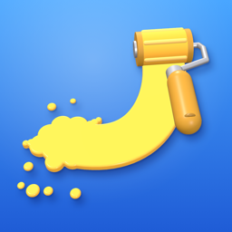

Paint.io
Paint the board. Loop back home. Don't get splatted.
Need a hand? Here are answers to common questions. If yours isn't here, write to us and we'll get back to you.
How is my progress saved?
Your coins, equipment and stats are saved on your iPhone. If you're signed in to iCloud, they're also kept in your own iCloud account, so they come back if you reinstall the game or move to a new iPhone signed in to the same Apple Account.
Do I need an account?
No. You can play straight away. Signing in to Game Center is optional; the game uses it to sign you in and to decide how ads are shown (see below).
Do I need an internet connection?
Yes, to play a round. The menus, shop, missions and ranks all work offline, but Play needs a connection. If you see "No connection", check Wi-Fi or mobile data and tap Retry.
How do ranks and seasons work?
Every round earns Brushes for how you placed, your splats and wins, and Brushes carry you up seven tiers, from Charcoal to Grandmaster. From Watercolour up, a poor round can cost a few. A season lasts four weeks; at the end you're paid coins for the highest rank you reached and start the next season a tier lower.
My progress didn't come back on a new iPhone
Check that you're signed in to iCloud with the same Apple Account on both phones, then open the game with an internet connection and give it a moment to sync. In the game's Settings you can see whether iCloud save is on and when it last synced.
How do I delete my data?
Open Settings in the game and tap Delete my data. That erases your progress on this iPhone and in iCloud, ranks included.
Why are there ads?
Ads keep the game free. They're shown in a small banner. Players under 13, and anyone not signed in to Game Center, only see non-personalised, kid-safe ads and are never asked about tracking. Players 13 and over are asked once whether to allow tracking, and can change that in the Settings app under Privacy & Security › Tracking. See the privacy policy for details.
How do I remove the ads?
On the Home screen, tap the round AD button under the settings gear and buy Remove Ads. It's a one-time purchase. If you get a new iPhone or reinstall the game, open the same screen and tap Restore purchase.
Questions, bugs or ideas: paintio1034@gmail.com
Please include your iPhone model and iOS version if you're reporting a problem.